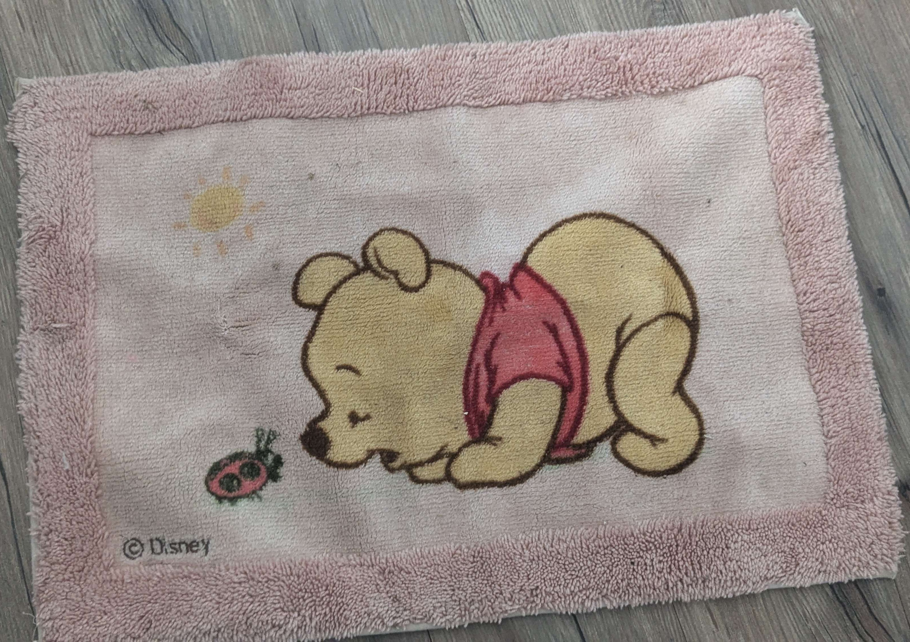

Untitled #1
June 1, 2026
I shouldn't speak on anything until my mind can leech from others. My own interpretation always ends up being wrong. I always speak, feeling I understand confidently, only to see what others say and I got it all wrong. In school, I did always just trail behind whoever I was comfortable with, and if I couldn't, I hid in the bathroom.
It was painful how quickly she went for that person none of us liked very much. I thought we could team up one last time out of obligation but no, not even that.
I did pet the support dog when it had it's vest on, but everyone else was doing it so it made me think it would be okay. I was told not to do that by one of them. It felt condescending. I understand the dog was working, I'm sorry.
A funny misspelling of my name turned into being occasionaly talked to as if I was a Christ-like figure. The group chat was named "Church of ▋▋▋▋▋▋". They once spoke about writing a bible around it. There was nothing to write about, yet I still imagined how that would be. I already felt isolated, then I wasn't even an equal anymore. The only coping mechanism I could find to not just cry all the time was to delude myself that I'm a god. With the help of that, I didn't feel so below everyone, though I am not as human either.
Backrooms
May 31, 2026
Backrooms movie, spoiler alert!
Before the day even started, it wasn't good. I was barely able to sleep because I was in pain. When arriving at the theater, all the store signs were drippy like everything is old and decrepit. It's because of all the rain but everything around looked dry so I was like what the hell. When I tried to go put butter on my popcorn, I hit it on the counter by accident and spilled some. When I bought a ticket, on my own for the first time so I panicked. Then even though the seats were a bit over half taken, there was still a set of good seats right in the middle which is my favorite spot. While the ads were playing and I was waiting for the movie to start, I was listening to my own music. Once In A Lifetime by Talking Heads played which felt connected when I heard Mary ask Clark "How did you get here?" while showing him driving a (not large) automobile.
After Mari woke up tied to the chair in the kitchen, Clark explained to her that the Backrooms is a space that tries to recreate the memories of the people that enter it. He then wanted to redo that therapy excercise. He asked the woman still-life to turn the light off but she didn't listen to him. He laughs and says he's been trying that with her for a while now and goes to do it himself. I noticed her head lowers in the moment he passes in front of her. In this whole sequence, we see again how he's verbally abuses to Barbara who used to be his wife before she kicked him out of his house. It's the moment when he went to turn off the light that I realized something about the whole movie and honestly cried a bit. It's childhood trauma. Just before, there was a sequence going down and down from the indoour of Mari's house from when she was a kid and kept inside by her mother who I believe must've suffered from dementia, schizophrenia, or some other mental illness that causes delusion. As it went lower and lower, the room became more and more empty and unstructured. It's like as you forget more and more. So that and the childhood trauma, the sort of warped still-lifes, it's all distorted memomries of childhood trauma. I'm terrible at explaining, I know. But Clark reminded me of my dad in that moment.

It's my memory of my childhood bedroom, specifically of it when I was young, since I still live in here. I remember it as much bigger, a bed with red metal frame at the end. There was a tall (for the height I was) little white shelf with a door type. I had this Whinnie the Pooh rug but I only remember it because I found it again a while ago. I am sure my room was very empty but my memory of it is more empty than I think it was.
Abuse?
May 22, 2026
My memory is failing when it comes to recalling most of what my dad says to me in those bad moments, the ones I always recall when thinking too much about the bad things he's done to me. Is this a good thing. I don't really think so.
It bothers me that I can't remember things. Although, I still remember those things happened but I don't remember the specific words anymore really. I don't want to forget everything completely, I've learned how to avoid conflict so I'd rather not forget it all and cause problems for myself.
Harbourer of a sad existence
May 10, 2026
There is a girl, off to die she goes! Why? Who cares!
The scientist studies, grief is what he feels. He kills himself and studies again tomorrow.
Their was an artist, she paints. The people found the blood of her pet rat on the canvas, the canvas with a painting of a man no one knows. She grieved and went to be hanged.
There was a writer, he knew not of the fire outside his house. He only enjoyed his problems in fracturing peace. He died as well.